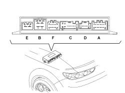

7030HB CHECK ON HOOD CONTROL UNIT POWER SUPPLY
- Path
- Test > 70 FITTINGS > 7030 SUN ROOF/GLASS PANEL > 7030H AUTOMATICALLY OPERATED HOOD > 7030HB CHECK ON HOOD CONTROL UNIT POWER SUPPLY
- Kind
- test / check procedure
- Applies to
- engines: 2.2 JTS, 3.2 JTS; all production periods; only with equipment: Spider
- Interactive page
- https://sloeber94.github.io/elrnDB-aBrrSpdr/en/#/946004029
Applies to: engines: 2.2 JTS, 3.2 JTS; all production periods; only with equipment: Spider
STEP | CHECK TO BE PERFORMED | REMEDIAL ACTION IF THE CHECK IS NOT OK |
|---|---|---|
1 | Check on +30 control unit power supply Connect using the Examiner in Voltmeter mode to the positive probe at pin 4 of connector and the negative probe earthed. The direct voltage reading should be around 12 Volts Connect the positive probe to pin 2 of connector B and the negative to earth. The direct voltage reading should be around 12 Volts | Replace the 30 A fuse F62 in the luggage comaprtment fuse box after having identified the cause of the malfunction. Replace the 20 A fuse F63 in the luggage comaprtment fuse box after having identified the cause of the malfunction. |
2 | Check earth connection Disconnect connector B of the control unit Check that the resistance between pins 1 and 3 and earth is less than 1 Ohm. | Restore the correct earth connection. |
